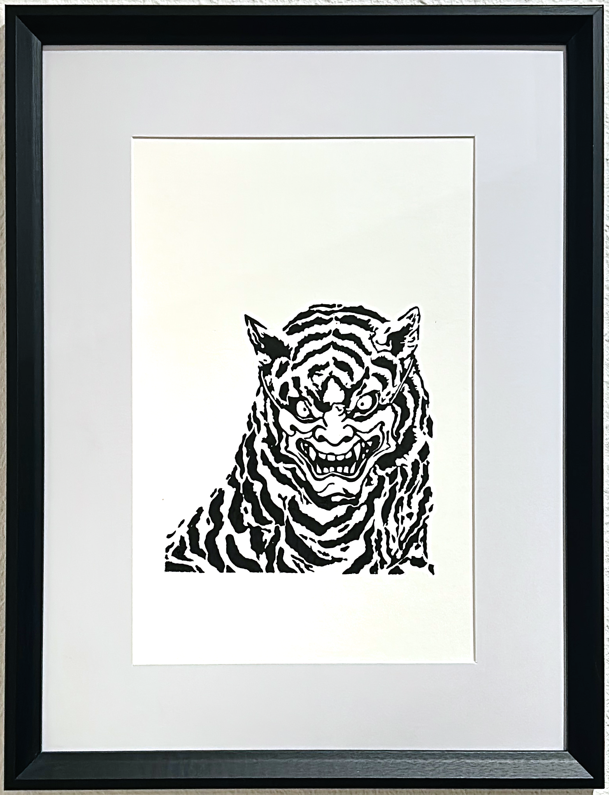
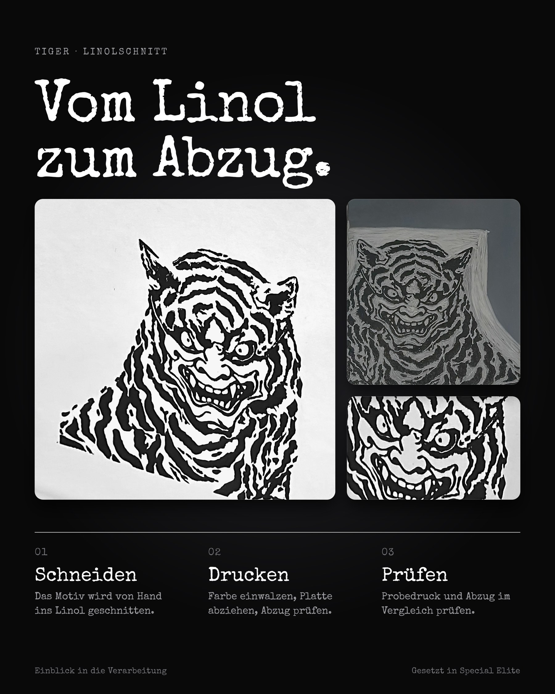

Schritt 1
Idee
Das Motiv entsteht als Skizze: der Oni-Tiger, reduziert auf wenige Flächen.
Shop / Kunst / Tiger

Kunstdruck · Linolschnitt
Ein Tiger mit Oni-Fratze, von Hand in Linoleum geschnitten und gedruckt. Schwarze Flächen, harte Kanten, viel Papier drumherum.
| Technik | Linolschnitt, Druck von Hand |
|---|---|
| Motivmaß | [PLATZHALTER Maße in cm] |
| Blattmaß | [PLATZHALTER Maße in cm] |
| Auflage | [PLATZHALTER Auflage, z. B. nummeriert x/y] |
| Lieferumfang | Druck, [PLATZHALTER Rahmen oder Passepartout] |
Rahmen
[PLATZHALTER Preis] EUR
Versandkosten: [PLATZHALTER]. Lieferzeit: [PLATZHALTER]. Rückgabe: [PLATZHALTER, siehe Versand & Rückgabe (Entwurf)].
Entwurf der Entstehungsgeschichte. Die Schritte sind aus dem Arbeitsablauf abgeleitet, Details folgen.
Das Motiv entsteht als Skizze: der Oni-Tiger, reduziert auf wenige Flächen.
[PLATZHALTER Angaben zur Linolplatte und zum Papier]
Die Platte wird Stück für Stück ausgeschnitten: schwarze Flächen bleiben stehen, Linien werden frei.
Ein erster Abzug zeigt, wo noch zu viel oder zu wenig Farbe ist.

Die Auflage wird von Hand gedruckt. Bild: Abzug, geschnittene Platte und Detail des Gesichts.
Prüfung, Signatur und Verpackung. [PLATZHALTER Angabe zur Prüfung]